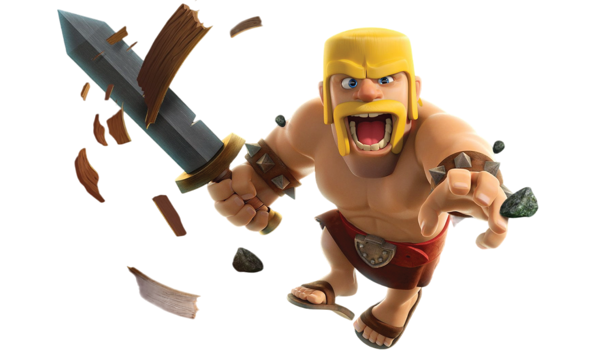
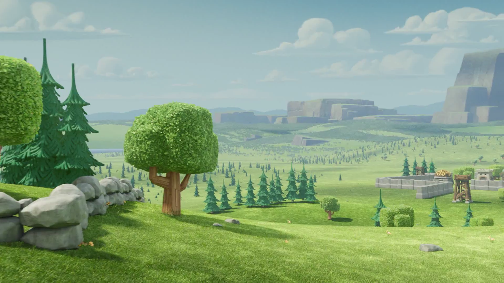
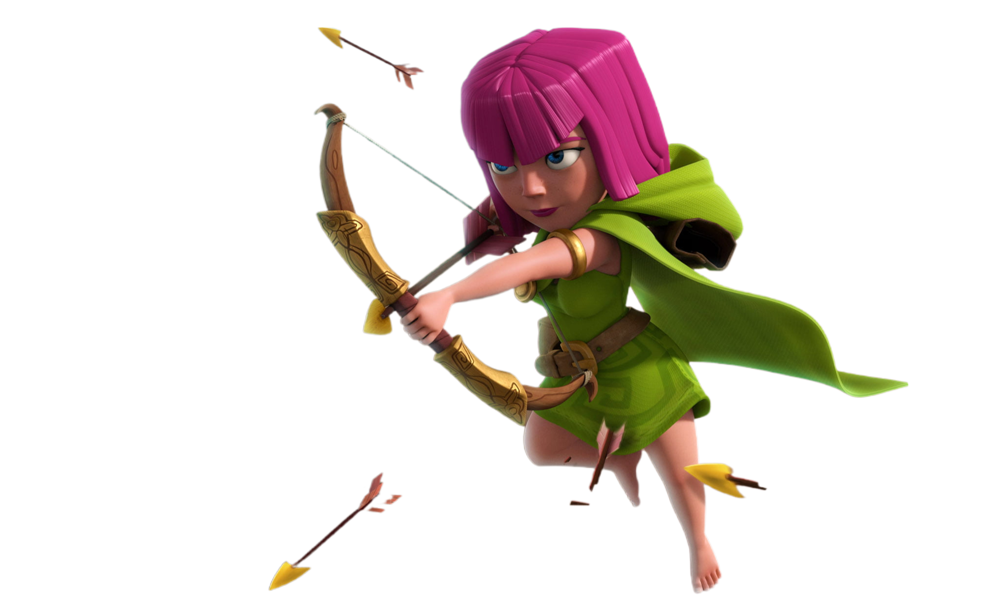
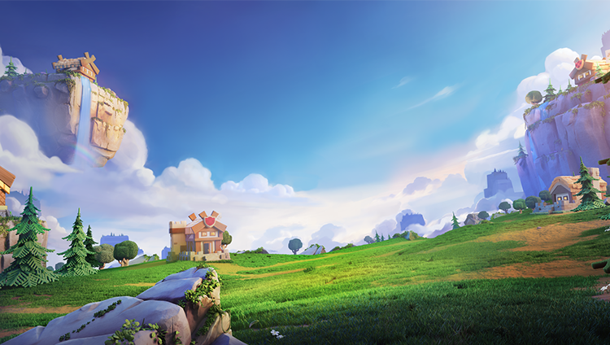
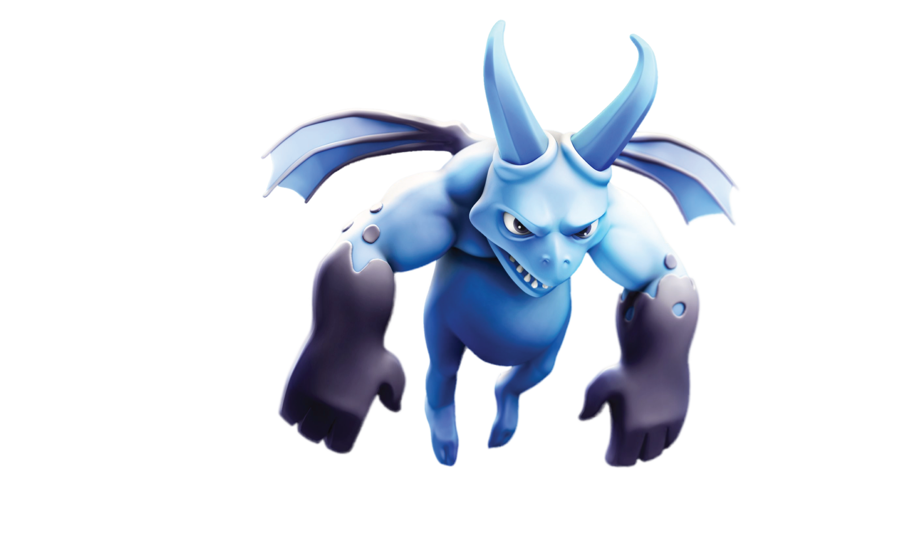
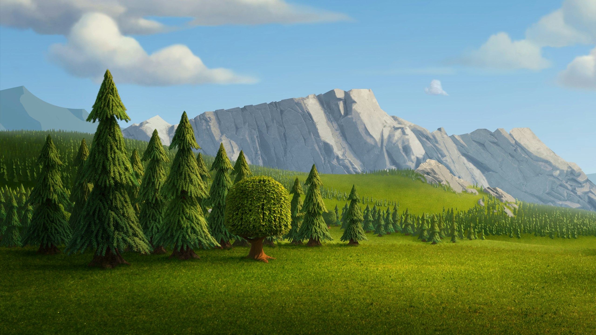
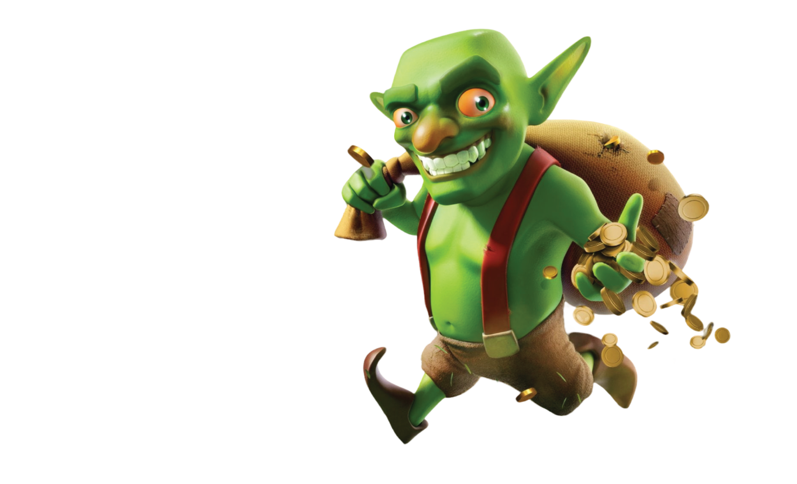
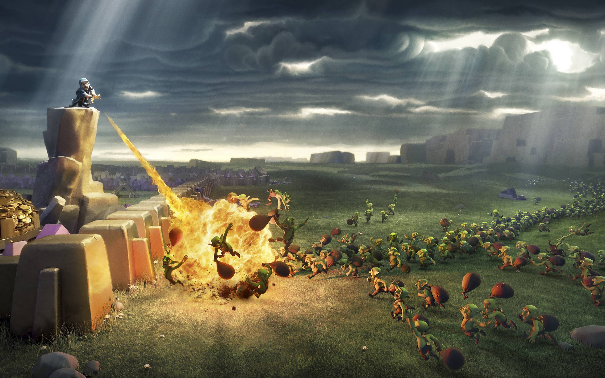

Clash Of Clans
Barbarian
Barbarian bukanlah prajurit biasa. Mereka adalah keturunan dari bangsa pejuang kuno yang telah lama menghilang dalam kabut waktu. Dibesarkan di tengah kerasnya alam liar, Barbarian dilatih sejak kecil untuk mengatasi rasa
takut, rasa sakit, dan rasa putus asa. Mereka adalah makhluk yang digerakkan oleh naluri purba, insting bertahan hidup yang ditanamkan dalam darah mereka.
Read More »


Clash Of Clans
Archer
Archer adalah prajurit perempuan yang dikenal karena ketepatan dan kecepatannya. Mereka bukan hanya penembak jitu tetapi juga prajurit yang cerdik dan penuh rahasia. Tiap Archer memiliki mata yang tajam, seperti elang yang
mengawasi mangsanya dari kejauhan. Di malam hari, saat dunia tertidur, Archer berlatih di bawah sinar rembulan, menyempurnakan keahlian mereka tanpa henti.
Read More »

Clash Of Clans
Witch
Witch adalah sosok yang tidak pernah menunjukkan wajah aslinya. Selalu bersembunyi di balik kerudung hitam, matanya yang bercahaya adalah satu-satunya petunjuk bahwa ada sesuatu yang lebih dalam di balik keheningan itu.
Desas-desus mengatakan bahwa Witch memiliki sebuah kitab kuno yang menyimpan rahasia kekuatan yang ia miliki. Kitab ini diturunkan dari generasi ke generasi, mengikat jiwa pemiliknya dengan kekuatan kegelapan.
Read More »


Clash Of Clans
Minion
Di malam yang paling kelam, ketika bulan menghilang dari pandangan dan angin berhembus dingin dari arah timur, suara sayap yang bergetar dapat terdengar dari kejauhan. Minion, makhluk yang tidak berasal dari dunia ini,
berkumpul di bawah langit yang penuh dengan kilat yang menyambar. Tidak ada yang tahu dari mana mereka datang, namun legenda mengatakan bahwa mereka adalah hasil dari eksperimen yang gagal di dalam laboratorium gelap yang
tersembunyi jauh di bawah tanah.
Read More »


Clash Of Clans
Goblin
Goblin adalah makhluk kecil dengan penampilan yang menyeramkan, kulitnya hijau pucat, telinganya runcing, dan giginya tajam seperti pisau. Namun, jangan terkecoh oleh ukurannya; mereka adalah pencuri paling berbahaya yang
pernah ada. Goblin memiliki indra penciuman yang sangat tajam untuk harta, terutama emas dan eliksir. Mereka bisa mencium bau kekayaan dari jarak bermil-mil dan akan melakukan apa saja untuk mendapatkannya.
Read More »
BARBARIAN
"Barbarian party time!"
ARCHER
"I never miss!"
WITCH
"No one escapes the night!"
MINION
"The sky is falling!"
GOBLIN
"Time to collect!"